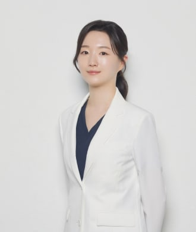

In One Line
시니올은 시니어 풀아치 임플란트 프로그램의 이름입니다
치아가 거의 없는 턱에 식립 각도를 조정해 소수의 임플란트를 심고, 전체 치아 보철을 시멘트 없이 고정하는 치료 방식입니다. 환자가 빼지 않는 고정성 보철입니다.
※ ‘시니올’은 치료법의 학술 명칭이 아니라 바로드림치과 안산점이 쓰는 프로그램 이름입니다. 비슷한 방식의 치료는 풀아치 임플란트, 올온엑스(All-on-X), 전체 임플란트 등으로도 불립니다. 풀아치 임플란트 자체의 설명은 풀아치 임플란트 안내에서 볼 수 있습니다.
Features
치료에서 함께 살펴보는 세 가지
치아가 오래 없던 턱은 뼈가 줄어 있는 경우가 많습니다. 아래 내용은 검사로 상태를 확인한 뒤 가능한 범위에서 적용합니다.
식립 각도 조정
뼈가 충분한 자리를 골라 임플란트를 기울여 심는 등 식립 각도를 조정하면, 뼈가 부족한 경우에도 진행할 수 있는 경우가 있습니다. CT로 뼈의 양과 신경 위치를 확인한 뒤 판단합니다.
시멘트 없는 고정
보철물을 접착용 시멘트로 붙이지 않고 나사로 고정하는 방식입니다. 필요할 때 보철물을 분리해 점검하고 조정할 수 있습니다.
즉시 보철(조건이 맞는 경우)
뼈 상태와 식립 개수가 맞으면 발치 당일 고정성 임시 치아를 연결해 식사를 시작할 수 있습니다. 모든 분이 가능한 것은 아니며 진단 후 안내합니다.
For You
이런 상태라면 상담을 받아 보세요
치아가 거의 남지 않아
씹는 게 힘드신 분
오래 쓴 틀니가
헐겁고 자꾸 아프신 분
전신질환이 있어
임플란트가 망설여지신 분
예전에 뼈가 부족해
어렵다고 들으신 분
남은 치아를 살릴 수 있다면 살리는 치료를 먼저 검토합니다. 전신질환이 있는 경우의 준비는 시니어 임플란트 페이지에 정리해 두었습니다.
Compare
일반 임플란트, 임플란트 틀니와 무엇이 다른가요
치아가 없는 정도와 뼈 상태에 따라 맞는 방법이 달라집니다. 세 방법의 차이와 비용은 검사 후 비교해 안내해 드립니다.
← 표를 좌우로 밀어서 보세요 →
| 구분 | 일반 임플란트 | 임플란트 틀니 | 풀아치 임플란트 (시니올 프로그램) |
|---|---|---|---|
| 어떤 방식인가요 | 없는 치아 자리마다 임플란트를 하나씩 심고 그 위에 보철을 올립니다. | 소수의 임플란트에 걸어 고정하는 틀니(오버덴처)입니다. 틀니 형태라 빼서 닦습니다. | 소수의 임플란트에 한쪽 턱 전체의 치아 보철을 고정합니다. 환자가 빼지 않는 고정성 보철입니다. |
| 주로 고려하는 경우 | 치아가 몇 개 없는 경우 | 전체 치아가 없고, 틀니 형태를 유지하면서 안정감을 높이고 싶은 경우 | 치아가 거의 또는 전혀 남지 않은 경우 |
| 보철 관리 | 임플란트마다 치실·치간칫솔 관리 | 틀니를 빼서 닦고 정기적으로 조정 | 치과에서 정기적으로 점검하고, 나사 고정이라 필요하면 분리해 조정 |
※ 위 표는 일반적인 특징을 정리한 것이며, 실제 적합 여부는 잇몸뼈 상태·전신 건강·환자의 선택에 따라 달라집니다. 임플란트 틀니는 틀니 페이지에서 볼 수 있습니다.
Process
진료 과정
상담 및 진단
씹기 어려움과 불편한 점, 혈압·혈당·복용 약물 등 전신 상태를 먼저 확인합니다.
3D CT 정밀 촬영
뼈 양과 신경 위치를 3차원으로 확인해 식립 위치와 각도를 설계합니다.
발치 및 임플란트 식립
필요 시 발치와 함께 계획한 위치에 식립합니다. 수술 부담이 큰 분은 수면치료(의식하진정법)를 병행할 수 있습니다.
임시 보철
뼈 상태와 식립 개수가 맞는 경우, 당일 고정성 임시 치아를 연결해 식사를 시작합니다.
최종 보철 및 관리
치유 후 최종 보철을 완성하고, 정기검진으로 보철물과 잇몸 상태를 꾸준히 확인합니다.
Cost
시니올 임플란트 비용은 어떻게 안내하나요
같은 풀아치 임플란트라도 환자마다 필요한 치료가 달라, 하나의 금액으로 말씀드리기 어렵습니다. 비용은 아래 요소에 따라 달라지며, 진료와 CT 촬영으로 상태를 확인한 뒤 안내해 드립니다.
- 식립하는 임플란트의 개수와 치료하는 턱(위·아래·양쪽)
- 발치가 필요한 치아의 수
- 뼈이식이 필요한지 여부
- 보철 재료
- 수면치료(의식하진정법) 병행 여부
건강보험 적용 범위도 치료 방식마다 다르므로 상담 때 함께 확인해 드립니다. 전화(031-402-2282)나 카카오톡으로 먼저 문의하셔도 됩니다.
Before You Decide
결정하기 전에 알아 두실 점
먼저 확인이 필요한 경우
- 혈압·혈당·복용 약물 때문에 수술 시점 조정이 필요한 경우: 담당 내과와 협진한 뒤 결정합니다.
- 뼈가 많이 줄어든 경우: 뼈이식 등 다른 방법이 필요할 수 있습니다.
- 남은 치아를 살릴 수 있는 경우: 보존 치료를 먼저 검토합니다.
수술 후에는
- 며칠간 붓기와 불편감이 있을 수 있습니다.
- 치유 기간에는 단단한 음식을 피하도록 안내합니다.
- 완성 후에도 정기검진으로 보철물과 잇몸 상태를 확인합니다.
※ 치료 결과와 기간은 개인의 상태에 따라 다를 수 있습니다.
FAQ
자주 묻는 질문
시니올 임플란트란 무엇인가요?+
시니올은 바로드림치과 안산점이 시니어 풀아치 임플란트에 붙인 프로그램 이름입니다. 치아가 거의 남지 않은 턱에 식립 각도를 조정해 소수의 임플란트를 심고, 전체 치아 보철을 시멘트 없이 고정하는 방식을 가리킵니다. 일반적인 치료 명칭은 풀아치 임플란트입니다.
시니올 임플란트와 풀아치(올온엑스) 임플란트는 같은 건가요?+
풀아치 임플란트 또는 올온엑스(All-on-X)는 소수의 임플란트에 한쪽 턱 전체의 치아를 고정하는 치료를 부르는 일반 명칭입니다. 시니올은 그중 바로드림치과 안산점이 시니어 환자를 위해 운영하는 프로그램의 이름입니다.
시니올 임플란트 가격은 얼마인가요?+
임플란트 개수, 발치할 치아 수, 뼈이식 필요 여부, 보철 재료, 수면치료 병행 여부에 따라 달라져 일률적인 금액을 안내하기 어렵습니다. 진료와 CT 촬영으로 상태를 확인한 뒤 안내해 드리며, 건강보험 적용 범위도 치료 방식마다 달라 상담 때 함께 확인해 드립니다.
나이가 많거나 고혈압·당뇨가 있어도 가능한가요?+
나이 자체보다 전신 건강 상태와 잇몸뼈 상태가 중요한 기준입니다. 혈압, 혈당, 복용 중인 약물을 먼저 확인하고, 필요하면 담당 내과와 협진한 뒤 안전한 범위에서 계획합니다. 수술이 어려운 상태라면 다른 방법을 안내해 드립니다.
수술한 날 바로 치아를 받을 수 있나요?+
뼈 상태와 식립 개수가 맞는 경우에는 발치 당일 고정성 임시 치아를 연결해 식사를 시작할 수 있습니다. 모든 분이 가능한 것은 아니며, 정밀 검사 후 가능 여부를 안내해 드립니다.
수술이 무서운데 수면치료를 같이 받을 수 있나요?+
네. 수면치료(의식하진정법)를 병행하면 얕은 진정 상태에서 두려움과 부담을 줄여 수술받으실 수 있습니다. 전신마취가 아니라 의식과 호흡이 유지되며, 혈압과 산소포화도를 실시간으로 모니터링합니다.
상담은 어디에서 받을 수 있나요?+
경기 안산시 단원구 고잔로 108 대동조이월드 405호(4층), 롯데시네마 센트럴락이 있는 건물 4층의 바로드림치과 안산점입니다. 안산중앙역에서 도보 5~10분이며 전화는 031-402-2282입니다.
Medical Team

한지상 공동 대표원장
통합치의학과 전문의 · 안산대학교 겸임교수 · 대한시니어치과학회 연자

김진희 공동 대표원장
통합치의학과 전문의

석지원 교정원장
통합치의학과 전문의 · 중앙대학교병원 임상진료교수 역임
Related
함께 보면 좋은 안내
바로드림치과 안산점 · 경기 안산시 단원구 고잔로 108 대동조이월드 405호 4층(롯데시네마 센트럴락 4층) · 안산중앙역 도보 5~10분 · 031-402-2282